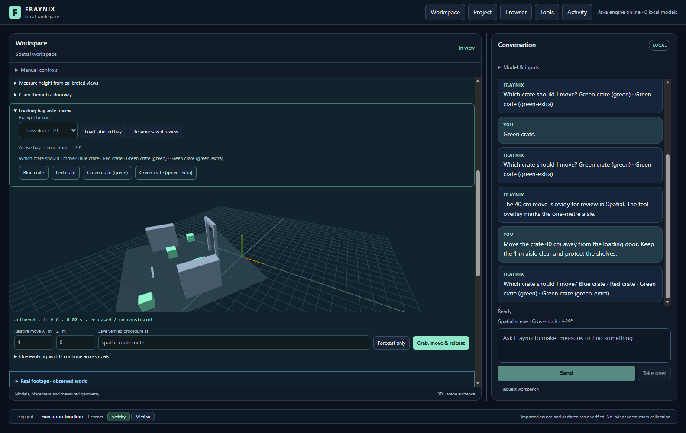
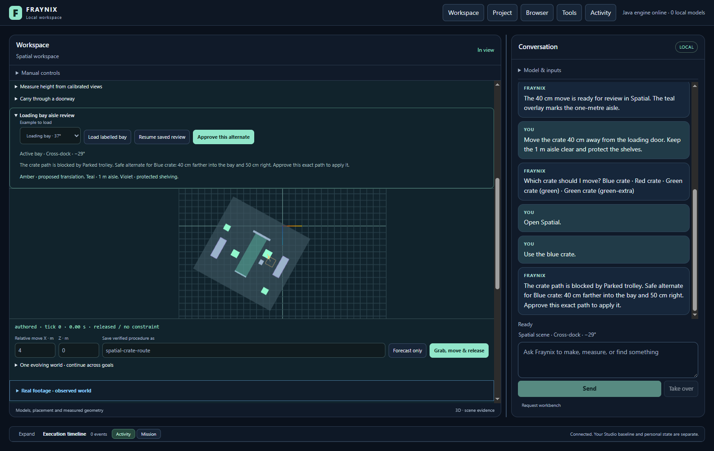
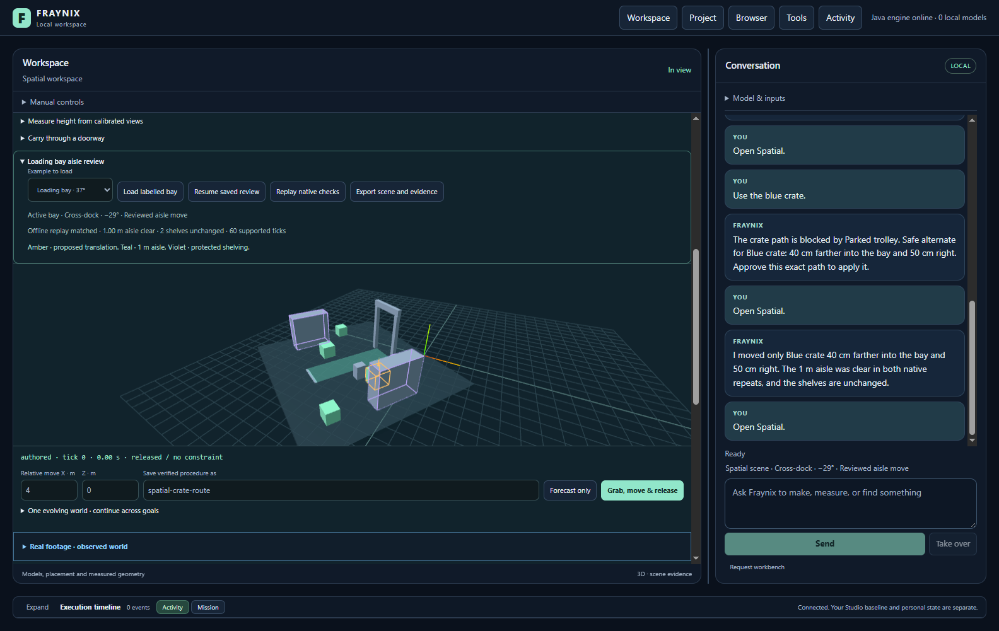

Clarify crate identity and review a safe alternate
Open Spatial, load Cross-dock and ask for the 40 cm move. Answer with the crate identity and review the proposed path.

Cross-dock has four possible crates and two with the same name

The exact right-hand alternate awaits approval in the rotated Cross-dock

The approved alternate and measurements replay offline after restart
System files
Open source